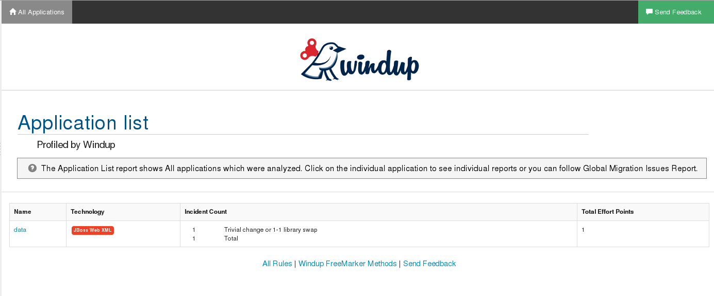
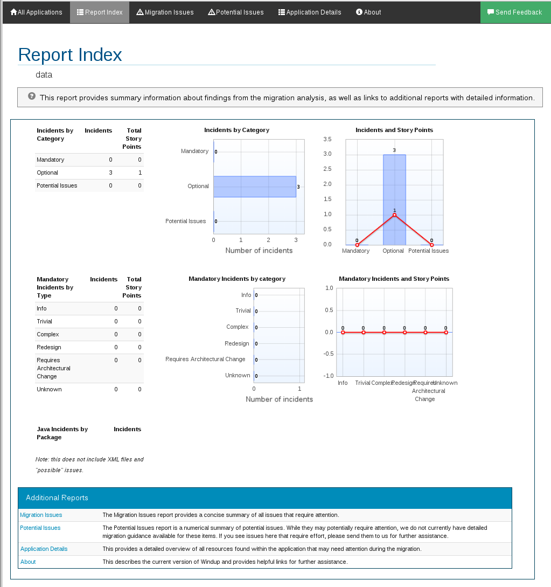
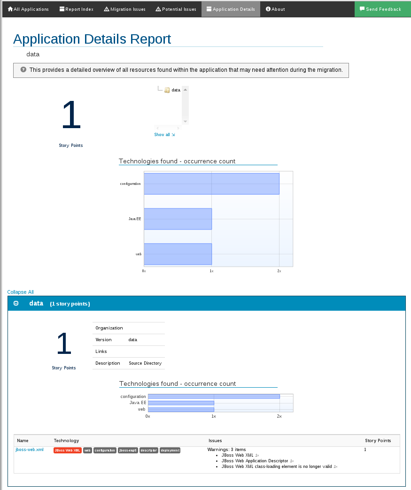

1. Introduction
This guide is for engineers, consultants, and others who plan to create custom XML-based rules for Windup.
If you are new to Windup, it is recommended that you start with the Windup User Guide. It provides detailed information about system requirements and detailed instructions on how to install and execute Windup. It also contains tips to optimize performance and provides links to other sources of information about Windup.
If you would like to contribute to the Windup source code base or provide Java-based rule add-ons, see the Windup Wiki.
2. Get Started
2.1. Create Your First XML Rule
Overview
This topic guides you through the process of creating and testing your first Windup XML-based rule.
Windup XML-base rules use the following familiar rule pattern:
when(condition)
perform(action)
otherwise(action)
Ruleset and Rule XML elements are covered in more detail here: XML Rule Construction.
Additional details about creating XML rules, with example syntax, can be found here: Create a Basic XML Rule.
As you create your first rule, refer to the Rules Schema for valid XML syntax.
Rule Example Description
In this example, you write a rule to discover instances where an application defines a jboss-web.xml file containing a <class-loading> element and provide a link to the documentation that describes how to migrate the code.
Create the Directory Structure for the Rule
-
Create a directory structure to contain your first rule and the data file to use for testing.
$ mkdir -p migration-rules/rules $ mkdir -p migration-rules/data
-
This directory structure will also be used to hold the generated Windup reports.
Create Data to Test the Rule
-
Use your favorite editor or IDE to create a
jboss-web.xmlfile in the~/migration-rules/data/subdirectory. -
Copy in the following content.
<!DOCTYPE jboss-web PUBLIC "-//JBoss//DTD Web Application 4.2//EN" "http://www.jboss.org/j2ee/dtd/jboss-web_4_2.dtd"> <jboss-web> <class-loading java2ClassLoadingCompliance="false"> <loader-repository> seam.jboss.org:loader=@projectName@ <loader-repository-config>java2ParentDelegation=false</loader-repository-config> </loader-repository> </class-loading> </jboss-web>
Create the Rule
-
Use your favorite editor or IDE to create an XML file in the
~/migration-rules/rules/subdirectory namedJBoss5-web-class-loading.windup.xml. Copy in the following content.<?xml version="1.0"?> <ruleset id="UNIQUE_RULESET_ID" xmlns="http://windup.jboss.org/schema/jboss-ruleset" xmlns:xsi="http://www.w3.org/2001/XMLSchema-instance" xsi:schemaLocation="http://windup.jboss.org/schema/jboss-ruleset http://windup.jboss.org/schema/jboss-ruleset/windup-jboss-ruleset.xsd"> <metadata> <description> <!-- Ruleset Description --> </description> <dependencies> <!-- Ruleset Dependencies --> </dependencies> <sourceTechnology id="SOURCE_ID" versionRange="VERSION_RANGE"/> <targetTechnology id="TARGET_ID" versionRange="VERSION_RANGE"/> <tag>Reviewed-2015-05-01</tag> </metadata> <rules> <rule id="UNIQUE_RULE_ID"> <when> <!-- Test for a condition here --> </when> <perform> <!-- Perform an action --> </perform> </rule> </rules> </ruleset>NoteWindup identifies files with the .windup.xmlextension as XML-based rules, so be sure to use this naming convention, otherwise the rule will not be evaluated! -
Add the unique identifier for the ruleset and rule.
-
Replace the
UNIQUE_RULESET_IDwith the file name: "JBoss5-web-class-loading" -
Replace the
UNIQUE_RULE_IDwith the ruleset ID appended with '_001': "JBoss5-web-class-loading_001"
-
-
Add the following ruleset addon dependencies.
<addon id="org.jboss.windup.rules,windup-rules-javaee,2.5.0.Final"/> <addon id="org.jboss.windup.rules,windup-rules-java,2.5.0.Final"/> -
Add the source and target technologies.
-
Replace the sourceTechnology
SOURCE_IDwith: "eap" -
Replace the targetTechnology
TARGET_IDwith: "eap" -
Replace the sourceTechnology
VERSION_RANGEwith: "(4,5)" -
Replace the targetTechnology
VERSION_RANGEwith: "[6,)"
-
-
Complete the
whencondition.-
Because this rule finds
jboss-web.xmlfiles containing theclass-loadingelement, we usexmlfileto evaluate the files. -
To match on the
class-loadingelement that is a child ofjboss-web, use the xpath expression "jboss-web/class-loading".<when> <xmlfile matches="jboss-web/class-loading" /> </when>
-
-
Complete the
performaction for this rule.-
Add a classification and descriptive title.
-
Assign a level of effort of "1" to this task.
-
Provide a hint with an informative message and a link to documentation that describes the migration details.
<perform> <iteration> <classification title="JBoss Web Application Descriptor" effort="1"/> <hint title="JBoss Web XML class-loading element is no longer valid"> <message> The class-loading element is no longer valid in the jboss-web.xml file. </message> <link href="https://access.redhat.com/documentation/en-US/JBoss_Enterprise_Application_Platform/6.4/html-single/Migration_Guide/index.html#Create_or_Modify_Files_That_Control_Class_Loading_in_JBoss_Enterprise_Application_Platform_6" title="Create or Modify Files That Control Class Loading in JBoss EAP 6"/> </hint> </iteration> </perform>
-
-
The rule is now complete and should look like the following example.
<?xml version="1.0"?> <ruleset id="JBoss5-web-class-loading" xmlns="http://windup.jboss.org/schema/jboss-ruleset" xmlns:xsi="http://www.w3.org/2001/XMLSchema-instance" xsi:schemaLocation="http://windup.jboss.org/schema/jboss-ruleset http://windup.jboss.org/schema/jboss-ruleset/windup-jboss-ruleset.xsd"> <metadata> <description> This ruleset looks for the class-loading element in a jboss-web.xml file, which is no longer valid in JBoss EAP 6 </description> <dependencies> <addon id="org.jboss.windup.rules,windup-rules-javaee,2.5.0.Final"/> <addon id="org.jboss.windup.rules,windup-rules-java,2.5.0.Final"/> </dependencies> <sourceTechnology id="eap" versionRange="(4,5)"/> <targetTechnology id="eap" versionRange="[6,)"/> </metadata> <rules> <rule id="JBoss5-web-class-loading_1000"> <when> <xmlfile matches="jboss-web/class-loading" /> </when> <perform> <iteration> <classification title="JBoss Web Application Descriptor" effort="1"/> <hint title="JBoss Web XML class-loading element is no longer valid"> <message> The class-loading element is no longer valid in the jboss-web.xml file. </message> <link href="https://access.redhat.com/documentation/en-US/JBoss_Enterprise_Application_Platform/6.4/html-single/Migration_Guide/index.html#Create_or_Modify_Files_That_Control_Class_Loading_in_JBoss_Enterprise_Application_Platform_6" title="Create or Modify Files That Control Class Loading in JBoss EAP 6"/> </hint> </iteration> </perform> </rule> </rules> </ruleset>
Install the Rule
A Windup rule is installed simply by copying the rule to the appropriate folder.
Copy the JBoss5-web-class-loading.windup.xml file to your ${user.home}/.windup/rules/ directory.
For Linux or Mac: ~/.windup/rules/ For Windows: "\Documents and Settings\USER_NAME\.windup\rules\" or "\Users\USER_NAME\.windup\rules\"
Validate the Rule Against the Schema
To validate your XML rule using the Windup rule schema, see Validate Rulesets Against the Schema.
Test the Rule
-
Open a terminal and navigate to the WINDUP_HOME directory.
-
Type the following command to test the rule in Windup, passing the test file as an input argument and a directory for the output report.
For Linux: bin/windup --sourceMode --input ~/migration-rules/data --output ~/migration-rules/reports --source eap --target eap For Windows: bin\windup.bat --sourceMode --input migration-rules\data --output migration-rules\reports --source eap --target eap
-
You should see this result.
***SUCCESS*** Windup report created: /home/your-username/migration-rules/reports/index.html Access it at this URL: file:///home/your-username/migration-rules/reports/index.html
Review the Reports
Access the report at ~/migration-rules/reports/index.html to be sure it provides the expected results.
-
The Overview page displays the Name of the input folder, "data", along with the Effort of "1 Story Points".
Application List
-
Click on the "data" link under the
Namecolumn to see the Report Index page and review the migration summary.ReportIndex
-
Click on the Application Details link to view the application report. This report displays a link for the name of the file, "jboss-web.xml", along with warnings and 1 Story Points.
Application Details Report
-
Drill down into Source Report file detail by clicking on the jboss-web.xml file link. This report provides information about the file and summarizes the story points. It also highlights the
<class-loading>line in thejboss-web.xmlfile, provides the message "The class-loading element is no longer valid in the jboss-web.xml file.", and provides a link to the Create or Modify Files That Control Class Loading in JBoss EAP 6 topic in the JBoss EAP 6 Migration Guide. Click on the link to be sure the link is valid.
-
Return to the Overview Page and click on the "All Rule" link to view the Rule Provider Executions report. Find the 'JBoss5-web-class-loading' rule in the report and verify that the Status shows "Condition met" and the Result shows "success".
3. Create and Test XML Rules
3.1. Difference Between XML-based and Java-based Rules
3.1.1. Summary
As mentioned before, Windup provides a core and a default set of rules to analyze and report on migration of application code. Windup also allows you to write your own custom rules. These rules can be written using either XML or Java. Rules written using XML are referred to as XML-based rules. Rules written using the Java API are referred to as Java-based rule add-ons. Both XML-based and Java-based rule add-ons can be used to inspect (classify) and report on Java source, XML, properties, archives, and other types of files,
3.1.2. Which one to choose?
XML-based rules provide a quick, simple way to create rules to analyze Java, XML, and properties files. If you simply need to highlight a specific section of Java code or XML file content and provide migration hints for it, creation of XML-based rules is the recommended approach. Creation of custom XML-based rules is covered in this guide.
Java-based rule add-ons provide the ability to create very complex rules, manipulate the shared data model graph, and customize the resulting reports. If you need to test or perform complex conditions and operations or want to manipulate the shared data model graph, create custom reports, or extend the functionality in any other way beyond what the XML-based rules provide, you must create Java-based rules. Creation of custom Java-based rules is covered in the Windup Core Development Guide.
3.1.3. Pros and Cons of XML-based Rules
Pros:
-
XML rules are fairly easy to write and require less code.
-
XML rules are not compiled so you do not need to configure Maven to build from source.
-
XML rules are simple to deploy. You simply drop the rule into the appropriate path and Windup automatically scans the new rule.
Cons:
-
XML rules only support a simple subset of conditions and operations.
-
XML rules do not provide for direct custom graph data manipulation that can be used later by other rules or the generation of reports.
-
XML rules do not support the ability to create custom reports.
3.1.4. Pros and Cons of Java-based Rules
Pros:
-
Java rule add-ons allow you to write custom conditions and operations and provide a lot of flexibility.
-
Java rule add-ons allow you to access and manipulate the shared data model graph and to customize reports.
-
You can set breakpoints and test Java rule add-ons using a debugger.
-
IDEs provide code completion for the Windup API.
Cons:
-
You must configure Maven to compile Java rule add-ons.
-
Java rule add-ons that are not included in the Windup core code base must be a full Forge add-on.
-
Java rule add-ons require that you write Java code.
-
Writing Java rule add-ons can be complex and require knowledge of Windup internals.
3.1.5. Examples of XML-based and Java Based Rules
The following is an example of a rule written in XML that classifies Java code:
<?xml version="1.0"?>
<ruleset id="EjbRules"
xmlns="http://windup.jboss.org/schema/jboss-ruleset"
xmlns:xsi="http://www.w3.org/2001/XMLSchema-instance"
xsi:schemaLocation="http://windup.jboss.org/schema/jboss-ruleset http://windup.jboss.org/schema/jboss-ruleset/windup-jboss-ruleset.xsd">
<rules>
<rule id="EjbRules_1000">
<when>
<javaclass references="javax.persistence.Entity" as="default">
<location>TYPE</location>
</javaclass>
</when>
<perform>
<iteration>
<classification title="JPA Entity" effort="0"/>
</iteration>
</perform>
</rule>
</rules>
</ruleset>The following is an example of a rule written in Java that classifies Java code:
/**
* Scans for classes with EJB related annotations, and adds EJB related metadata for these.
*/
public class DiscoverEjbAnnotationsRuleProvider extends AbstractRuleProvider
{
@Override
public Configuration getConfiguration(GraphContext context) {
return ConfigurationBuilder.begin()
.addRule()
.when(JavaClass.references("javax.ejb.{annotationType}").at(TypeReferenceLocation.ANNOTATION))
.perform(new AbstractIterationOperation<JavaTypeReferenceModel>()
{
public void perform(GraphRewrite event, EvaluationContext context, JavaTypeReferenceModel payload)
{
extractEJBMetadata(event, payload);
};
})
.where("annotationType").matches("Stateless|Stateful")
.withId(ruleIDPrefix + "_StatelessAndStatefulRule")
.addRule()
.when(JavaClass.references("javax.ejb.MessageDriven").at(TypeReferenceLocation.ANNOTATION))
.perform(new AbstractIterationOperation<JavaTypeReferenceModel>() {
@Override
public void perform(GraphRewrite event, EvaluationContext context, JavaTypeReferenceModel payload) {
extractMessageDrivenMetadata(event, payload);
}
})
.withId(ruleIDPrefix + "_MessageDrivenRule")
.addRule()
.when(JavaClass.references("javax.persistence.Entity").at(TypeReferenceLocation.ANNOTATION).as(ENTITY_ANNOTATIONS)
.or(JavaClass.references("javax.persistence.Table").at(TypeReferenceLocation.ANNOTATION).as(TABLE_ANNOTATIONS_LIST)))
.perform(Iteration.over(ENTITY_ANNOTATIONS).perform(new AbstractIterationOperation<JavaTypeReferenceModel>() {
@Override public void perform(GraphRewrite event, EvaluationContext context, JavaTypeReferenceModel payload) {
extractEntityBeanMetadata(event, payload);
}
}).endIteration())
.withId(ruleIDPrefix + "_EntityBeanRule");
}
...
}3.1.6. Quick Comparison Summary
| Requirement | XML Rule | Java Rule Add-on |
|---|---|---|
Easy to write? |
Yes |
Depends on the complexity of the rule |
Requires that you configure Maven? |
No |
Yes |
Requires that you compile the rule? |
No |
Yes |
Simple deployment? |
Yes |
No |
Supports custom reports? |
No |
Yes |
Ability to create complex conditions and operations? |
No |
Yes |
Ability to directly manipulate the graph data? |
No |
Yes |
3.2. XML Rule Construction
This section describes the basic construction of XML rules. All XML rules are defined as elements within rulesets.
3.2.1. Rulesets
A ruleset is a group of one or more rules that targets a specific area of migration. This is the basic construct for the <ruleset> element.
-
<ruleset id="UNIQUE_RULESET_ID">: This element defines this as a Windup ruleset and gives it a unique ruleset ID.
-
<metadata>: Provide metadata about the ruleset.
-
<description>: Description of the ruleset.
-
<dependencies/>: Rule add-ons required by this ruleset.
-
<sourceTechnology/>: Source technology
-
<targetTechnology/>: Target technology
-
-
<rules>: This element contains the individual rules.
-
<rule id="UNIQUE_RULESET_ID_UNIQUE_RULE_ID">: This element defines the rule and gives it a unique ID. One or more rules can be defined for a ruleset.
-
<when>: This element defines the condition or conditions to match on. For a detailed description of the elements allowed in a
<when>, see XML Rule - When Condition Syntax. -
<perform>: This element defines the action to be performed when the rule condition is matched. For a detailed description of the elements allowed in a
<perform>, see XML Rule - Perform Action Syntax. -
<otherwise>: This element defines the action to be performed when the rule condition is not matched. This element takes the same child elements as the
<perform>element. -
<where>: This element matches on a string pattern.
-
-
<file-mapping/>: Map an extension to a graph type
-
<package-mapping/>: Maps from a package pattern (regular expression) to a organization name.
-
-
3.2.2. Predefined Rules
Windup provides some predefined rules for more common migration requirements, for example, mapping files from the source platform to target platform. The following is an example of the predefined "XmlFileMappings" rule.
<?xml version="1.0"?>
<ruleset id="XmlFileMappings"
xmlns="http://windup.jboss.org/schema/jboss-ruleset"
xmlns:xsi="http://www.w3.org/2001/XMLSchema-instance"
xsi:schemaLocation="http://windup.jboss.org/schema/jboss-ruleset http://windup.jboss.org/schema/jboss-ruleset/windup-jboss-ruleset.xsd">
<metadata>
<description>
This ruleset maps files to the Model.
</description>
<dependencies>
<addon id="org.jboss.windup.rules.files.FileMappingHandler"/>
</dependencies>
<sourceTechnology id="eap" versionRange="(4,5)"/>
<targetTechnology id="eap" versionRange="[6,)"/>
<tag>reviewed-2015-05-27</tag>
</metadata>
<rules>
<file-mapping from=".*\.tld$" to="XmlFileModel"/>
<file-mapping from=".*\.bpel$" to="XmlFileModel"/>
<file-mapping from=".*\.wsdl$" to="XmlFileModel"/>
<file-mapping from=".*\.wsdd$" to="XmlFileModel"/>
<file-mapping from=".*\.bpelex$" to="XmlFileModel"/>
<file-mapping from=".*\.mon$" to="XmlFileModel"/>
<file-mapping from=".*\.xmi$" to="XmlFileModel"/>
<file-mapping from=".*\.export$" to="XmlFileModel"/>
<file-mapping from=".*\.import$" to="XmlFileModel"/>
<file-mapping from=".*\.bcfg$" to="XmlFileModel"/>
<file-mapping from=".*\.map$" to="XmlFileModel"/>
<file-mapping from=".*\.brg$" to="XmlFileModel"/>
<file-mapping from=".*\.brgt$" to="XmlFileModel"/>
<file-mapping from=".*\.ruleset$" to="XmlFileModel"/>
<file-mapping from=".*\.module$" to="XmlFileModel"/>
<file-mapping from=".*\.modulex$" to="XmlFileModel"/>
<file-mapping from=".*\.composite$" to="XmlFileModel"/>
<file-mapping from=".*\.requirements$" to="XmlFileModel"/>
</rules>
</ruleset>3.3. Create a Basic XML Rule
You can create a Windup rule using Java, XML, or Groovy. This topic describes how to create a rule using XML.
3.3.1. Prerequisites
-
You should have already installed Windup. Installation instruction are provided in the Windup User Guide.
-
Before you begin, you may also want to be familiar with the following documentation:
-
Windup rules are based on the ocpsoft rewrite project. You can find more information about ocpsoft rewrite here: http://ocpsoft.org/rewrite/
-
The JavaDoc for the Windup API is located here: http://windup.github.io/windup/docs/latest/javadoc/
-
The XML rule schema is located here: http://windup.jboss.org/schema/windup-jboss-ruleset.xsd
-
3.3.2. File Naming Convention for XML Rules
You must name the file containing an XML rule with the .windup.xml extension. Windup identifies files with this extension as XML-base rules, so be sure to use this naming convention, otherwise the rule will not be evaluated!
3.3.3. Basic XML Rule Template
XML rules consist of conditions and actions and follow the familiar "if/then/else" construct:
when(condition)
perform(action)
otherwise(action)
The following is the basic syntax for XML rules.
<?xml version="1.0"?>
<ruleset id="unique-ruleset-id"
xmlns="http://windup.jboss.org/schema/jboss-ruleset"
xmlns:xsi="http://www.w3.org/2001/XMLSchema-instance"
xsi:schemaLocation="http://windup.jboss.org/schema/jboss-ruleset http://windup.jboss.org/schema/jboss-ruleset/windup-jboss-ruleset.xsd">
<metadata>
<!-- Metadata about the rule including a description,
source technology, target technology, and any
add-on dependencies -->
</metadata>
<rules>
<rule id="unique-ruleset-id-01000">
<when>
<!-- Test a condition... -->
</when>
<perform>
<!-- Perform this action when condition is satisfied -->
</perform>
<otherwise>
<!-- Perform this action when condition is not satisfied -->
</otherwise>
</rule>
<rules>
</ruleset>3.3.4. Create the Ruleset Metadata
The XML ruleset metadata element provides additional information about the ruleset such as a description, the source and target technologies, and add-on dependencies. The metadata also allows for specification of tags, which allow you to provide additional information about a ruleset. For more information about ruleset metadata, see XML Rule Construction.
Example:
<ruleset id=”unique-ruleset-id”
xmlns="http://windup.jboss.org/schema/jboss-ruleset"
xmlns:xsi="http://www.w3.org/2001/XMLSchema-instance"
xsi:schemaLocation="http://windup.jboss.org/schema/jboss-ruleset http://windup.jboss.org/schema/jboss-ruleset/windup-jboss-ruleset.xsd">
<metadata>
<description>
This is the description.
</description>
<dependencies>
<addon id="org.jboss.windup.rules,windup-rules-javaee,2.0.1.Final"/>
<addon id="org.jboss.windup.rules,windup-rules-java,2.0.0.Final"/>
</dependencies>
<sourceTechnology id="weblogic" versionRange="(10,12]"/>
<sourceTechnology id="ejb" versionRange="(2,3]"/>
<targetTechnology id="eap" versionRange="(5,6]"/>
<targetTechnology id="ejb" versionRange="(2,3]"/>
<tag>require-stateless</tag>
<tag>require-nofilesystem-io</tag>
<executeAfter>AfterRulesetId</executeAfter>
<executeBefore>BeforeRulesetId</executeBefore>
</metadata>
<rules>
</rules>
</ruleset>3.3.5. Create the Rule
Individual rules are contained within a <rules> element and consist of one or more conditions and actions.
Create the Rule When Condition
The XML rule <when> element tests for a condition. The following is a list of valid <when> conditions.
| Element | Description |
|---|---|
<true> |
Always match. |
<or> <and> <not> |
These are the standard logical operators. |
<javaclass> |
Test for a match in a Java class. |
<javaclass-ignore> |
Exclude javaclass which you would like to ignore in processing discovery. |
<xmlfile> |
Test for a match in an XML file. |
<project> |
Test for project characteristics, such as dependencies. |
<filecontent> |
Find strings or text within files, for example, properties files. |
<file-mapping> |
Define file names to internal stored File model. |
<package-mapping> |
Define package names to organization or libraries. |
The specific syntax is dependent on whether you are creating a rule to evaluate Java class, an XML file, a project, or file content and is described in more detail here: XML Rule - When Condition Syntax
Create the Rule Perform Action
The XML rule <perform> element performs the action when the condition is met. Operations allowed in this section of the rule include the classification of application resources, in-line hints for migration steps, links to migration information, and project lineitem reporting. The following is a list of valid <peform> actions.
| Element | Description |
|---|---|
<classification> |
This operation adds metadata that is intended to apply to the entire file. For example, if the Java Class is a JMS Message Listener, you might want to add a Classification with the title "JMS Message Listener". Information that would apply to the entire file would go here. Also, if an effort level is set, that information would apply to the entire file. |
<link> |
Provides an HTML link to additional information or documentation that provides more information about the migration task. |
<hint> |
This operation adds metadata to a line within the file. For example, if the rule were set to apply to all instances of "javax.jms.TextMessage.setText(java.lang.String)" this would highlight every instance of that method call. This is frequently used when there is detailed information to attach that applies at the line level. Each time this operation is fired, the effort level will be added. In our example, if the effort level were 3 and there were 4 instances of "javax.jms.TextMessage.setText(java.lang.String)", then this would add 9 total story points. Whether or not to apply effort at this level or in a classification depends upon the amount of effort required during the migration. |
<xslt> |
Specify how to transform an XML file. |
<lineitem> |
This provides a high level message that will appear in the application overview page. |
<iteration> |
Specify to iterate over an implicit or explicit variable defined within the rule. |
The syntax is described in more detail here: XML Rule - Perform Action Syntax.
3.4. XML Rule - When Condition Syntax
Conditions allowed in the when portion of a rule must extend GraphOperation and currently include evaluation of Java classes, XML files, projects, and file content. Because XML rules are modeled after the Java-based rule add-ons, links to JavaDocs for the related Java classes are provided for a better understanding of how they behave.
The complete XML rule schema is located here: http://windup.jboss.org/schema/windup-jboss-ruleset.xsd
The following sections describe the more common XML when rule conditions.
3.4.1. javaclass Syntax
Summary
Use the javaclass element to find imports, methods, variable declarations, annotations, class implementations, and other items related to Java classes. For a better understanding of the javaclass condition, see the JavaDoc for the JavaClass class.
The following is an example of a rule that tests for WebLogic-specific Apache XML javaclass packages.
<rule id="weblogic-03000">
<when>
<javaclass references="weblogic.apache.xml.{*}" />
</when>
<perform>
<hint title="WebLogic Specific Apache XML Package" effort="1" severity="mandatory">
<message>
Code using this package should be replaced with code using the org.apache.xml package from [Apache
Xerces](http://xerces.apache.org/).
</message>
</hint>
</perform>
</rule>Construct a javaclass Element
javaclass Element Attributes
| Attribute Name | Type | Description | ||
|---|---|---|---|---|
references |
CLASS_NAME |
The package or class name to match on. Wildcard characters can be used.
Example: references="weblogic.apache.xml.{*}"
|
||
matchesSource |
STRING |
An exact regex to match. This is useful to distinguish hard-coded strings. Example: sourceMatch="log4j.logger" |
||
as |
VARIABLE_NAME |
A variable name assigned to the rule so that it can be used as a reference in later processing. See the Example: as="MyEjbRule" |
||
from |
VARIABLE_NAME |
Begin the search query with the filtered result from a previous search identified by its Example: from="MyEjbRule" |
||
in |
PATH_FILTER |
Used to filter input files matching this regex (regular expression) naming pattern. Wildcard characters can be used. (Optional) Example: in="{*}File1"
|
JavaClass Element Child Elements
| Child Element | Description |
|---|---|
<location> |
The location where the reference was found in a Java class. Location can refer to annotations, field and variable declarations, imports, and methods. For the complete list of valid values, see the JavaDoc for TypeReferenceLocation. Example: |
3.4.2. xmlfile Syntax
Summary
Use the xmlfile element to find information in XML files. For a better understanding of the xmlfile condition, see the XmlFile JavaDoc.
The following is an example of a rule that tests for an xmlfile.
<rule id="UNIQUE_RULE_ID">
<when>
<xmlfile matches="/w:web-app/w:resource-ref/w:res-auth[text() = 'Container']">
<namespace prefix="w" uri="http://java.sun.com/xml/ns/javaee"/>
</xmlfile>
</when>
<perform>
<hint title="Title for Hint from XML">
<message>Container Auth</message>
</hint>
<xslt description="Example XSLT Conversion" extension="-converted-example.xml"
template="/exampleconversion.xsl"/>
</perform>
</rule>Construct an xmlfile Element
xmlfile Element: Attributes
| Attribute Name | Type | Description |
|---|---|---|
matches |
XPATH |
Match on an XML file condition. (Optional) Example: matches="/w:web-app/w:resource-ref/w:res-auth[text() = 'Container']" |
xpathResultMatch |
XPATH_RESULT_STRING |
Return results that match the given regex. (Optional) Example: <xmlfile matches="//foo/text()" xpathResultMatch="Text from foo."/> |
as |
VARIABLE_NAME |
A variable name assigned to the rule so that it can be used as a reference in later processing. See the Example: as="MyEjbRule" |
in |
PATH_FILTER |
Used to filter input files matching this regex (regular expression) naming pattern. Wildcard characters can be used. (Optional) Example: in="{*}File1"
|
from |
VARIABLE_NAME |
Begin the search query with the filtered result from a previous search identified by its Example: from="MyEjbRule" |
public-id |
PUBLIC_ID |
The DTD public-id regex. (Optional) Example: public-id="public" |
xmlfile Element: matches - Advanced usage: Custom Windup XPath functions
The matches attribute may use several built-in custom XPath functions,
which may have useful side effects, like setting the matched value on the rule variables stack.
| Function | Description |
|---|---|
|
Match a XPath expression against a string, possibly containing Windup parameterization placeholders. Example: matches="windup:matches(//foo/@class, '{javaclassname}'"
This will match all |
xmlfile Element: Child Elements
| Child Element | Description |
|---|---|
<namespace> |
The namespace referenced in XML files. This element contains 2 optional attributes: The Example: |
3.4.3. project Syntax
Summary
Use the project element to query the Maven POM file for the project characteristics. For a better understanding of the project condition, see the JavaDoc for the Project class.
The following is an example of a rule that checks for a junit dependency version between 2.0.0.Final and 2.2.0.Final.
<rule id="UNIQUE_RULE_ID">
<when>
<project>
<artifact groupId="junit" artifactId="junit" from="2.0.0.Final" to="2.2.0.Final"/>
</project>
</when>
<perform>
<lineitem message="The project uses junit with the version between 2.0.0.Final and 2.2.0.Final"/>
</perform>
</rule>Construct a project Element
project Element Attributes
The project element is used to match against the project’s Maven POM file. You can use this condition to query for dependencies of the project. It does not have any attributes itself.
project Element Child Elements
| Child Element | Description |
|---|---|
<artifact> |
Subcondition used within |
artifact Element Attributes
| Attribute Name | Type | Description |
|---|---|---|
groupId |
PROJECT_GROUP_ID |
Match on the project |
artifactId |
PROJECT_ARTIFACT_ID |
Match on the project |
fromVersion |
FROM_VERSION |
Specify the lower version bound of the artifact. For example |
toVersion |
TO_VERSION |
Specify the upper version bound of the artifact. For example |
3.4.4. filecontent Syntax
Summary
Use the filecontent element to find strings or text within files, for example, a line in a Properties file. For a better understanding of the filecontent condition, see the JavaDoc for the FileContent class.
Construct a filecontent Element
filecontent Element Attributes
| Attribute Name | Type | Description |
|---|---|---|
pattern |
String |
Match the file contents against the provided parameterized string. |
filename |
String |
Match the file names against the provided parameterized string. |
as |
VARIABLE_NAME |
A variable name assigned to the rule so that it can be used as a reference in later processing. See the Example: as="MyEjbRule" |
from |
VARIABLE_NAME |
Begin the search query with the filtered result from a previous search identified by its Example: from="MyEjbRule" |
3.4.5. file Syntax
Summary
Use the file element to find the existence of files with a specific name, for example, an ibm-webservices-ext.xmi file. For a better understanding of the file condition, see the JavaDoc for the File class.
Construct a file Element
file Element Attributes
| Attribute Name | Type | Description |
|---|---|---|
filename |
String |
Match the file names against the provided parameterized string. |
as |
VARIABLE_NAME |
A variable name assigned to the rule so that it can be used as a reference in later processing. See the Example: as="MyEjbRule" |
from |
VARIABLE_NAME |
Begin the search query with the filtered result from a previous search identified by its Example: from="MyEjbRule" |
3.5. XML Rule - Perform Action Syntax
Operations available in the perform section of the rule include the classification of application resources, in-line hints for migration steps, links to migration information, and project lineitem reporting. Because XML rules are modeled after the Java-based rule add-ons, links to JavaDocs for the related Java classes are provided for a better understanding of how they behave.
The complete XML rule schema is located here: http://windup.jboss.org/schema/windup-jboss-ruleset.xsd
The following sections describe the more common XML rule perform actions.
3.5.1. Classification Syntax
Summary
The classification element is used to identify or classify application resources that match the rule. It provides a title that is displayed in the report, a level of effort, and it can also provide links to additional information about how to migrate this resource classification. For a better understanding of the classification action, see the JavaDoc for the Classification class.
The following is an example of a rule that classifies a resource as a WebLogic EAR application deployment descriptor file.
Example:
<rule id="XmlWebLogicRules_10vvyf">
<when>
<xmlfile as="default" matches="/*[local-name()='weblogic-application']"></xmlfile>
</when>
<perform>
<iteration>
<classification title="Weblogic EAR Application Descriptor" effort="3"/>
</iteration>
</perform>
</rule>classification Element: Attributes
| Attribute Name | Type | Description |
|---|---|---|
title |
STRING |
Title this resource using the specified string. Example: title="JBoss Seam Components" |
effort |
BYTE |
The level of effort assigned to this resource. (Optional) Example: effort="2" |
severity |
STRING |
Whether this classification is "mandatory" or "optional". (Optional) Example: severity="mandatory" |
of |
VARIABLE_NAME |
Create a new classification for the given reference. (Optional) Example: of="MySeamRule" |
classification Element: Child Elements
| Child Element | Description |
|---|---|
<link> |
Provides a link URI and text title for additional information. Example: |
<tag> |
Provides additional custom information for the classification. Example: |
<description> |
Description of this resource Example: |
3.5.2. Link Syntax
Summary
The link element is used in classifications or hints to provide links to informational content. For a better understanding of the link action, see the JavaDoc for the Link class.
The following is an example of a rule that creates links to additional information.
Example:
<rule id="SeamToCDIRules_2fmb">
<when>
<javaclass references="org.jboss.seam.{*}" as="default"/>
</when>
<perform>
<iteration>
<classification title="SEAM Component" effort="1">
<link href="http://www.seamframework.org/Seam3/Seam2ToSeam3MigrationNotes" title="Seam 2 to Seam 3 Migration Notes"/>
<link href="http://docs.jboss.org/weld/reference/latest/en-US/html/example.html" title="JSF Web Application Example"/>
<link href="http://docs.jboss.org/weld/reference/latest/en-US/html/contexts.html" title="JBoss Context Documentation"/>
<link href="http://www.andygibson.net/blog/tutorial/cdi-conversations-part-2/" title="CDI Conversations Blog Post"/>
</classification>
</iteration>
</perform>
</rule>link Element: Attributes
| Attribute Name | Type | Description |
|---|---|---|
href |
URI |
The URI for the referenced link. Example: href="https://access.redhat.com/articles/1249423" |
title |
STRING |
A title for the link. Example: title="Migrate WebLogic Proprietary Servlet Annotations" |
3.5.3. Hint Syntax
Summary
The hint element is used to provide a hint or inline information about how to migrate a section of code. For a better understanding of the hint action, see the JavaDoc for the Hint class.
The following is an example of a rule that creates a hint.
Example:
<rule id="WebLogicWebServiceRules_8jyqn">
<when>
<javaclass references="weblogic.wsee.connection.transport.http.HttpTransportInfo.setUsername({*})" as="default">
<location>METHOD</location>
</javaclass>
</when>
<perform>
<iteration>
<hint title="Proprietary web-service" severity="mandatory" effort="3">
<message>Replace proprietary web-service authentication with JAX-WS standards.</message>
<link href="http://java-x.blogspot.com/2009/03/invoking-web-services-through-proxy.html" title="JAX-WS Proxy Password Example"/>
</hint>
</iteration>
</perform>
</rule>hint Element: Attributes
| Attribute Name | Type | Description |
|---|---|---|
title |
STRING |
Title this hint using the specified string. Title is a required attribute. Example: title="JBoss Seam Component Hint" |
severity |
STRING |
Whether this hint is "mandatory" or "optional". (Optional) Example: severity="mandatory" |
in |
VARIABLE_NAME |
Create a new Hint in the FileLocationModel resolved by the given variable. (Optional) Example: in="Foo" |
effort |
BYTE |
The level of effort assigned to this resource. (Optional) Example: effort="2" |
hint Element: Child Elements
| Child Element | Description |
|---|---|
<message> |
A message describing the migration hint. Example: |
<link> |
Identify or classify links to informational content. See the section on Link Syntax for details. Example: |
<tag> |
Define a custom tag for this Example: |
3.5.4. XSLT Syntax
Summary
The xslt element specifies how to transform an XML file. For a better understanding of the xslt action, see the JavaDoc for the XSLTTransformation class.
The following is an example of rule that defines an XSLT action.
Example:
<rule id="XmlWebLogicRules_6bcvk">
<when>
<xmlfile as="default" matches="/weblogic-ejb-jar"/>
</when>
<perform>
<iteration>
<classification title="Weblogic EJB XML" effort="3"/>
<xslt title="JBoss EJB Descriptor (Windup-Generated)" template="transformations/xslt/weblogic-ejb-to-jboss.xsl" extension="-jboss.xml"/>
</iteration>
</perform>
</rule>xslt Element: Attributes
| Attribute Name | Type | Description |
|---|---|---|
of |
STRING |
Create a new transformation for the given reference. (Optional) Example: of="testVariable_instance" |
title |
STRING |
Sets the title for this XSLTTransformation in the report. Example: title="XSLT Transformed Output" |
extension |
STRING |
Sets the extension for this XSLTTransformation. Example: extension="-result.html" |
template |
STRING |
Sets the XSL template. Example: template="simpleXSLT.xsl" |
effort |
BYTE |
The level of effort required for the transformation. (Optional) |
xslt Element: Child Elements
| Child Element | Description |
|---|---|
<xslt-parameter> |
Specify XSLTTransformation parameters as property value pairs Example: |
3.5.5. Lineitem Syntax
Summary
The lineitem element is used to provide general migration requirements for the application, such as the need to replace deprecated libraries or the need to resolve potential class loading issues. This information is displayed on the project or application overview page. For a better understanding of the lineitem action, see the JavaDoc for the Lineitem class.
The following is an example of a rule that creates a lineitem message.
Example:
<rule id="weblogic_servlet_annotation_1000">
<when>
<javaclass references="weblogic.servlet.annotation.WLServlet" as="default">
<location>ANNOTATION</location>
</javaclass>
</when>
<perform>
<hint effort="1">
<message>Replace the proprietary WebLogic @WLServlet annotation with the Java EE 6 standard @WebServlet annotation.</message>
<link href="https://access.redhat.com/articles/1249423" title="Migrate WebLogic Proprietary Servlet Annotations" />
<lineitem message="Proprietary WebLogic @WLServlet annotation found in file."/>
</hint>
</perform>
</rule>lineitem Element: Attributes
| Attribute Name | Type | Description |
|---|---|---|
message |
STRING |
A lineitem message Example: message="Proprietary code found." |
3.5.6. Iteration Syntax
Summary
The iteration element specifies to iterate over an implicit or explicit variable defined within the rule. For a better understanding of the iteration action, see the JavaDoc for the Iteration class.
The following is an example of a rule that performs an iteration.
Example:
<rule id="jboss-eap5-xml-19000">
<when>
<xmlfile as="jboss-app" matches="/jboss-app"/>
<xmlfile as="jboss-app-no-DTD" matches="/jboss-app" public-id=""/>
</when>
<perform>
<iteration over="jboss-app">
<classification title="JBoss application Descriptor" effort="5"/>
</iteration>
<iteration over="jboss-app-no-DTD">
<classification title="JBoss application descriptor with missing DTD" effort="5"/>
</iteration>
<iteration over="jboss-app-no-DTD">
<xslt title="JBoss application descriptor - JBoss 5 (Windup-generated)" template="transformations/xslt/jboss-app-to-jboss5.xsl" extension="-jboss5.xml"/>
</iteration>
</perform>
</rule>iteration Element: Attributes
| Attribute Name | Type | Description |
|---|---|---|
over |
VARIABLE_NAME |
Iterate over the condition identified by this VARIABLE_NAME. Example: over="jboss-app" |
iteration Element: Child Elements
| Child Element | Description |
|---|---|
<iteration> |
Child elements include a |
3.6. Validate Rulesets Against the Schema
To validate XML rules using the Windup rule schema, follow these steps.
-
Download this XML validator: https://github.com/amouat/xsd-validator/releases/download/v1.0/xsdv-1.0.zip
-
Extract the ZIP file into a directory of your choice.
-
The xsd-validator requires the schema file to be located on the local file system. Download the Windup rule schema from one of the following locations to a directory of your choice.
-
Run the following command, replacing the variables as follows.
-
RULESET_DIRECTORY: The path to the top level folder that contains the rules.
-
XSD_VALIDATOR: The path to the extracted xsd-validator.
-
XSD_SCHEMA: The path to the local Windup windup-jboss-ruleset.xsd file.
find RULESET_DIRECTORY -type f -iname "*.windup.xml" -exec XSD_VALIDATOR./xsdv.sh XSD_SCHEMA {} \;For example:
find ~/MigrationRules/ -type f -iname "*.windup.xml" -exec ~/tools/xsdv/xsdv.sh ~/windup/config-xml/schema/windup-jboss-ruleset.xsd {} \;
-
-
The console displays the results of each ruleset validation. If a ruleset fails to validate, the content causing the error is printed to the console.
3.7. Test an XML Rule in Windup
3.7.1. Add the Rule to Windup
A Windup rule is installed simply by copying the rule to the appropriate Windup folder. Windup scans for rules, which are files that end with either *.windup.groovy or .windup.xml, in the following locations:
-
Copy the rule to a directory specified by the
--userRulesDirectoryargument on the Windup command line. -
Copy the rule to the WINDUP_HOME/rules/ directory. WINDUP_HOME is the directory where you install and run the Windup executable.
-
Copy the rule to the
${user.home}/.windup/rules/directory. This directory is created by Windup the first time it is executed and contains rules, add-ons, and the Windup log.For Linux or Mac: ~/.windup/rules/ For Windows: "\Documents and Settings\USER_NAME\.windup\rules\" -or- "\Users\USER_NAME\.windup\rules\"
3.7.2. Test the XML Rule
-
Test the XML rule against your application file by running Windup in a terminal.
The command uses this syntax:
WINDUP_HOME/bin/windup [--sourceMode] --input INPUT_ARCHIVE_OR_FOLDER --output OUTPUT_REPORT_DIRECTORY --target TARGET_TECHNOLOGY --packages PACKAGE_1 PACKAGE_2 PACKAGE_N
You should see the following result:
***SUCCESS*** Windup report created: OUTPUT_REPORT_DIRECTORY/index.html
3.7.3. Additional Resources
-
More examples of how to run Windup are located in the Windup User Guide.
-
Working examples of XML-based rules can be found on GitHub in the Windup source code GitHub repository and the Windup quickstarts GitHub repository or latest release ZIP download.
4. Additional Resources
4.1. Review the Existing Windup XML Rules
Windup XML-based rules are located on GitHub at the following location: https://github.com/windup/windup-rulesets/tree/master/rules.
Instructions to fork and clone the Windup rulesets repository to your local machine are provided on the Wiki.
Rules are grouped by target platform and function. When you create a new rule, it is helpful to find a rule that is similar to the one you need and use it as a starting template.
New rules are continually added, so it is a good idea to check back frequently to review the updates.
4.2. Important Links
-
Windup wiki: https://github.com/windup/windup/wiki
-
Windup documentation (generated from the Wiki documentation at the link above):
-
Windup forums: https://developer.jboss.org/en/windup
-
Windup issue tracker: https://issues.jboss.org/browse/WINDUP
-
Windup users mailing List: windup-users@lists.jboss.org
-
Windup developers mailing list: windup-dev@lists.jboss.org
-
Windup commits mailing list: windup-commits@lists.jboss.org
-
Windup on Twitter: @JBossWindup
-
Windup IRC channel: Server FreeNode (
irc.freenode.net), channel#windup.
5. Appendix
5.1. Rule Story Points
5.1.1. What are Story Points?
Story Points are an abstract metric commonly used in Scrum Agile software development methodology to estimate the level of effort needed to implement a feature or change.
Windup uses story points to express the level of effort needed to migrate particular application constructs, and in a sum, the application as a whole. It does not necessarily translate to man-hours, but the value should be consistent across tasks.
5.1.2. How Story Points are Estimated in Rules
Estimating the level of effort for the story points for a rule can be tricky. The following are the general guidelines Windup uses when estimating the level of effort required for a rule.
| Level of Effort | Story Points | Description |
|---|---|---|
Information |
0 |
An informational warning with very low or no priority for migration. |
Trivial |
1 |
The migration is a trivial change or a simple library swap with no or minimal API changes. |
Complex |
3 |
The changes required for the migration task are complex, but have a documented solution. |
Redesign |
5 |
The migration task requires a redesign or a complete library change, with significant API changes. |
Rearchitecture |
7 |
The migration requires a complete rearchitecture of the component or subsystem. |
Unknown |
13 |
The migration solution is not known and may need a complete rewrite. |
5.1.3. Task Severity
In addition to the level of effort, migration tasks can be assigned a severity that indicates whether the task must be completed or can be postponed.
- Mandatory
-
The task must be completed for a successful migration. If the changes are not made, the resulting application will not build or run successfully. Examples include replacement of proprietary APIs that are not supported in the target platform.
- Optional
-
If the migration task is not completed, the application should work, but the results may not be the optimal. If the change is not made at the time of migration, it is recommended to put it on the schedule soon after migration is completed. An example of this would be the upgrade of EJB 2.x code to EJB 3.
5.2. About the WINDUP_HOME Variable
This documentation uses the WINDUP_HOME replaceable value to denote the path to the Windup distribution. When you encounter this value in the documentation, be sure to replace it with the actual path to your Windup installation.
-
If you download and install the latest distribution of Windup from the JBoss Nexus repository, WINDUP_HOME refers to the windup-distribution-2.5.0-Final folder extracted from the downloaded ZIP file.
-
If you build Windup from GitHub source, WINDUP_HOME refers to the windup-distribution-2.5.0-Final folder extracted from the windup-distribution/target/windup-distribution-2.5.0-Final.zip file.